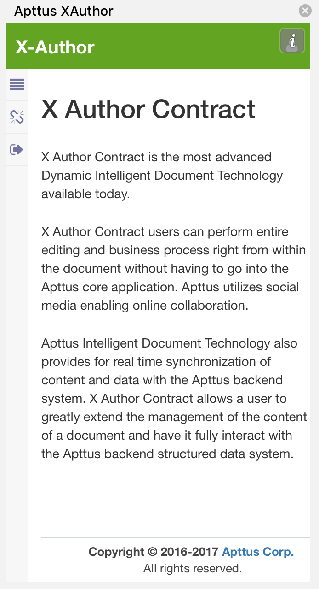

Logging in to X-Author Contracts
Before you can work with your agreement documents in X-Author, you must log in to your Salesforce org through the add-in.
To log in to X-Author Contracts
After successful login, the X-Author pane refreshes and displays additional tabs.
